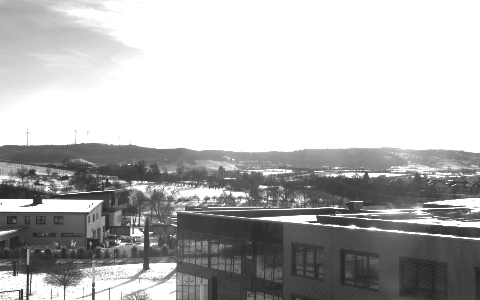

|
IDS peak ICV v1.5.0
|
|
IDS peak ICV v1.5.0
|
High Dynamic Range (HDR) imaging is a technique used to reconstruct an image that preserves detail in both the darkest and brightest regions of a scene. Traditional Low Dynamic Range (LDR) images — such as standard 8‑bit images — can only represent a limited intensity range. This often results in loss of detail in shadows and highlights.
Examples include:
By combining multiple exposures captured at different exposure values (for example, −2 EV, 0 EV, and +2 EV), HDR reconstruction synthesizes a single image that preserves detail across a wider dynamic range.
The HDR class and accompanying HDRAlgorithm enum provide a high‑level interface for performing such reconstruction using the Debevec and Malik method.
HDR requires multiple images of the same static scene captured with different exposure times. Only exposure should change — focus, aperture, and camera position must remain stable.
Most HDR algorithms estimate a mapping between scene radiance and pixel intensities. This mapping is the camera response curve. In the Debevec method, estimating the CRC is a radiometric calibration step that helps accurately reconstruct scene radiance.
After calibration, all pixel intensities from input images can be merged into a unified physical quantity called the radiance map — the nonlinear mapping that relates pixel intensities to scene irradiance. This radiance map forms the basis of the final HDR image. The map typically uses floating‑point precision to accommodate very wide dynamic ranges.
Although not explicitly part of the provided class, HDR images usually must be tone‑mapped for display on standard monitors (which cannot display full HDR radiance ranges). Tone mapping is performed as a separate step.
To perform HDR reconstruction, you need the following:
| Exposure: 1000µs | Exposure: 4000µs | LDR Image |
|---|---|---|
 |
This example demonstrates a complete HDR workflow — from calibration to tone mapping — and annotates each step with the why behind the what.
Creating the HDR object sets the reconstruction algorithm to Debevec and prepares internal state. Currently, only the Debevec algorithm is supported.
Estimating the camera response curve (CRC) and HDR reconstruction requires a set of multi‑exposure images of the same static scene.
The exposure times should be staggered logarithmically to ensure that all intensity levels are well represented. The user must ensure that each image is associated with the correct exposure time in its metadata, as incorrect or mismatched values will lead to invalid calibration results.
The resulting image sequence must be provided as an array (see the API Reference for the expected type).
Calling the estimate_response_curve function performs the radiometric calibration step required by the HDR algorithm. During this operation, the system evaluates the provided multi‑exposure images and collects representative pixel samples across all exposure levels. It then solves the optimization system to estimate the camera response curve. The computed CRC is cached internally for use in the processing step.
To store the CRC persistantly, it can be serialized to a file and later deserialized:
The process function performs the actual HDR reconstruction by combining the exposure‑bracketed input images into a high‑dynamic‑range radiance map. Using the previously estimated CRC, the algorithm first linearizes all pixel intensities so they represent proportional scene irradiance. It then evaluates each pixel location across all exposures, applies the Debevec–Malik weighting scheme to suppress unreliable values (such as saturated highlights or underexposed shadows), and solves for the corresponding radiance value. The result is a floating‑point radiance map that preserves detail across the full brightness range of the scene. Only pixels with reliable values are inside the resulting image region.
If the camera response curve was not estimated explicitly, the process function automatically esimates the curve during its first call, which increases the total processing time.
After HDR reconstruction, the resulting radiance map typically contains a much wider range of luminance values than standard displays can reproduce. To convert this high-dynamic-range data into a displayable format, the library provides specialized tone mapping operators (e.g., Drago or Linear), which compress the HDR image into a low-dynamic-range (LDR) representation.
For more details on the available operators, see the language-specific modules:
During this operation, the algorithm maps floating‑point radiance values into the output range (typically 8‑bit or 16‑bit per channel). This step produces an LDR image suitable for visualization and saving.